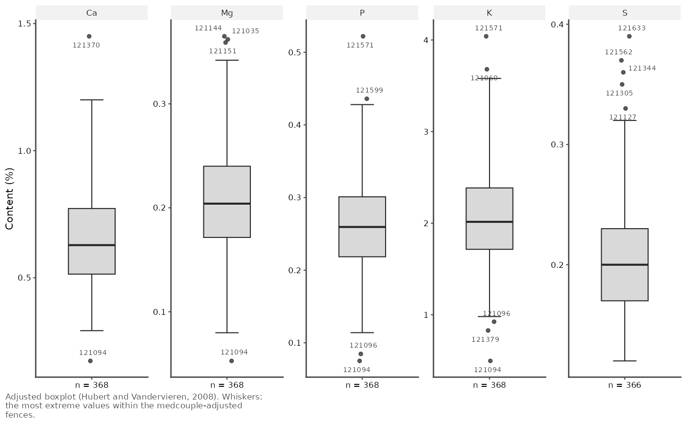
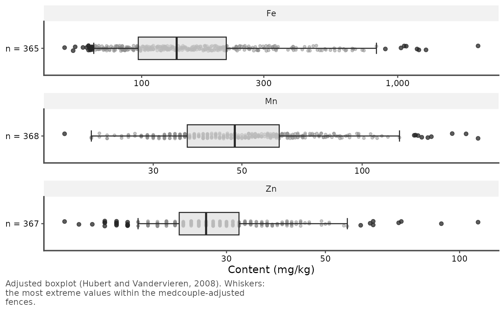

This function generates the adjusted boxplot, which is a robust graphical method for visualizing skewed data distributions. It provides a more accurate representation of the data's spread and skewness compared to standard boxplot, especially in the presence of outliers.
Usage
adjusted_boxplot(
x,
plot = TRUE,
id = NULL,
group = NULL,
scales = c("free_y", "fixed"),
points = c("outliers", "all", "none"),
label_outliers = FALSE,
show_n = TRUE,
show_mean = FALSE,
annotate = NULL,
horizontal = FALSE,
log = FALSE,
fill = "grey85",
xlab = NULL,
ylab = NULL,
title = NULL,
caption = TRUE,
base_size = 11,
x_labels_angle = 0,
box_width = 0.5,
notch = FALSE,
notch_width = 0.5,
staple_width = 0.5,
xlabels.angle = deprecated(),
xlabels.vjust = deprecated(),
xlabels.hjust = deprecated(),
box.width = deprecated(),
notchwidth = deprecated(),
staplewidth = deprecated()
)Arguments
- x
A data frame (or matrix) of numeric variables, with optionally the columns
idandgroup.- plot
A logical value indicating whether to plot the boxplot (default is
TRUE) or to return its statistics.- id
Optional column of
x(unquoted or as a string) identifying the observations, such as sample names: it names the outlying observations in theoutlierstable and withlabel_outliers.- group
Optional column of
x(unquoted or as a string) of groups, such as sites or treatments: the boxes of each group are drawn side by side, with their own statistics. Rows with a missing group are left out.- scales
"free_y"(default), one panel per variable with its own value axis, or"fixed", a common value axis.- points
The observations drawn:
"outliers"(default), the outlying ones;"all"; or"none".- label_outliers
A logical: label the outlying observations with their
id, else their row number (FALSE, default). The labels are moved apart so that they do not overlap; where many outliers crowd together, some are left unlabeled.- show_n
A logical: write the number of values below each box (
TRUE, default).- show_mean
A logical: mark the mean of each box with a diamond (
FALSE, default).- annotate
Statistics added to each box (none by default): some of
"shape","outliers","fences","median","spread","location","test"and"missing", or"all"(see Details).- horizontal
A logical: horizontal boxes (
FALSE, default), suited to many variables or long names.- log
A logical: a logarithmic value axis (
FALSE, default), for variables spanning orders of magnitude. The statistics are those of the data, not of their logarithm.- fill
The fill color of the boxes (default
"grey85"), or one color per group (or per variable withoutgroup).- xlab, ylab
The titles of the axis of the variables (or groups) and of the value axis. Default is none.
- title
The plot title. A long title is split into a title and a subtitle.
- caption
TRUE(default), a caption naming the boxplot and its whiskers;FALSE, no caption; or a caption of your own.- base_size
The size of the text, in points. Default is 11.
- x_labels_angle
The angle (in degrees) of the labels below the boxes. Default is 0 (horizontal).
- box_width
The width of the boxes (default 0.5).
- notch
A logical value indicating whether to draw notches (default is
FALSE): the notch spans the median \(\pm 1.58\,\text{IQR}/\sqrt{n}\) (McGill et al., 1978); two medians whose notches do not overlap differ roughly at the 5% level.- notch_width
The width of the notch relative to the box (default 0.5).
- staple_width
The width of the staples at the ends of the whiskers, relative to the box (default 0.5).
- xlabels.angle, xlabels.vjust, xlabels.hjust, box.width, notchwidth, staplewidth
![[Deprecated]](figures/lifecycle-deprecated.svg) Use
Use x_labels_angle,box_width,notch_widthandstaple_width; the justification of the labels now follows their angle.
Value
If
plot = TRUE, aggplot2object.If
plot = FALSE, a list of tibbles:stats, with one row per variable (and group): the numbers of valuesnand of missing valuesn_missing, the whisker endslowerandupper(the most extreme values within the fences), the quartilesq1andq3, themedian, the fences, the notch limits, themedcouple, the 95% confidence interval of the median (median_lower,median_upper), theiqr, the robust coefficient of variationrcv(%), thebiweightlocation, themean, and the numbers of outlying valuesn_outliersand of expected ones in clean dataexpected_outliers;outliers, with the outlying values, theirrowinx, theiridand their tailout("lower"or"upper"); and, withgroup,tests, the Kruskal-Wallis test between the groups of each variable (statistic,df,p_value).
Details
The function is based on the medcouple (MC) measure computed on the data and which
robustly measures skewness. This measure is bounded between -1 and 1. The
medcouple is equal to zero when the observed distribution is symmetric,
whereas a positive (resp. negative) value of MC corresponds to a right
(resp. left) tailed distribution. The fences are, for \(\text{MC} \geq 0\),
$$[Q_1 - 1.5 e^{-4\,\text{MC}}\,\text{IQR};\; Q_3 + 1.5 e^{3\,\text{MC}}\,\text{IQR}]$$
and, for \(\text{MC} < 0\),
$$[Q_1 - 1.5 e^{-3\,\text{MC}}\,\text{IQR};\; Q_3 + 1.5 e^{4\,\text{MC}}\,\text{IQR}],$$
calibrated by Hubert and Vandervieren (2008) so that about 0.7% of the
observations of a clean, moderately skewed distribution are flagged, as
with Tukey's boxplot for normal data. The whiskers end at the most extreme
observations within the fences, and the observations outside are drawn as
points. The statistics are computed by robustbase::adjboxStats(), whose
quartiles are Tukey's hinges, as in boxplot(). The method suits
distributions that are not excessively skewed, i.e. with
\(|\text{MC}| \leq 0.6\).
Layout. Each variable is drawn in its own panel, with its own value
axis (scales = "free_y"), so that variables of different scales or units
stay readable; scales = "fixed" draws them in one panel, on a common
axis. With group, the boxes of the groups are side by side in the panel
of each variable. Below each box, n is the number of non-missing values.
Points. By default, the outlying observations are drawn, slightly
spread sideways so that equal values do not hide each other.
points = "all" draws every observation, the outlying ones in black,
as some journals require; label_outliers = TRUE names the outlying
observations by id (else by row number), and the outliers table of
plot = FALSE gives them all.
Annotations. annotate adds, for each box:
"shape": the medcouple (MC, marked(> 0.6)beyond the range of the method), or thegandhof the generalized boxplot, which explain the asymmetry of the whiskers;"outliers": the number of flagged values, with the number expected in clean data (about 0.7% for the adjusted boxplot, which Hubert and Vandervieren calibrated as Tukey's boxplot for normal data, andalphafor the generalized one): many more flagged values than expected point to real outliers;"fences": the fences beyond which values are flagged, as dashed marks (on the sides with outlying values), the whiskers ending at the last values inside;"median": the median with its distribution-free 95% confidence interval, from the order statistics (Md); the notches are made to compare two medians, and are not a confidence interval of one;"spread": the interquartile range and the robust coefficient of variation \(\text{rCV} = \text{IQR} / (1.349\,\text{median})\), in percent, read as a relative standard deviation;"location": the biweight location (biweight_location()), a robust mean, marked by a cross (the mean, withshow_mean, is pulled by the outlying values);"test": withgroup, the p-value of the Kruskal-Wallis test between the groups, below the variable name. With several variables, adjust the p-values for multiple testing (seep.adjust()and theteststable);"missing": the number of missing values, next ton.
annotate = "all" adds them all (the test only with group). The
caption gives their key. With several boxes in a panel, each statistic
takes two short lines: for many groups, make the figure wider or choose
fewer annotations. All the values are in the stats and tests tables
of plot = FALSE.
Publication figures. Give the units of the variables in their names
(such as "Ca (%)", with check.names = FALSE in data.frame()) or in
ylab. Make the plot at its printed size, with base_size set to the
text size of the journal (often 7 to 9 points), and save it with
ggplot2::ggsave(), for example
ggsave("figure.pdf", p, width = 85, height = 70, units = "mm") for a
single column. The caption says which boxplot is drawn, because readers
assume Tukey's whiskers (1.5 IQR) otherwise; use caption = FALSE and
state it in the figure legend instead, for example: "Adjusted boxplots
(Hubert and Vandervieren, 2008): the boxes show the quartiles and the
median, the whiskers extend to the most extreme values within the
medcouple-adjusted fences, and the points are the values outside."
References
The adjusted boxplot is based on the methodology described in:
Brys, G., Hubert, M., Struyf, A., (2004). A Robust Measure of Skewness. Journal of Computational and Graphical Statistics, 13(4):996-1017
Hubert, M., Vandervieren, E., (2008). An adjusted boxplot for skewed distributions. Computational Statistics and Data Analysis, 52(12):5186-5201
McGill, R., Tukey, J. W., Larsen, W. A. (1978). Variations of box plots. The American Statistician, 32(1):12-16 (notches)
See also
generalized_boxplot() for skewed and heavy-tailed distributions.
Examples
data(forageLIBS)
minerals <- forageLIBS[c("Measurement", "Ca", "Mg", "P", "K", "S")]
# mineral contents, each on its own axis, the outlying samples named: a
# figure of a journal page width
p <- adjusted_boxplot(minerals, id = Measurement, label_outliers = TRUE,
ylab = "Content (%)", base_size = 8)
p

# ggplot2::ggsave("minerals.pdf", p, width = 175, height = 70, units = "mm")
# the statistics and the outlying samples
res <- adjusted_boxplot(minerals, id = Measurement, plot = FALSE)
res$stats
#> # A tibble: 5 × 21
#> variable n n_missing lower q1 median q3 upper lower_fence
#> <fct> <int> <int> <dbl> <dbl> <dbl> <dbl> <dbl> <dbl>
#> 1 Ca 368 0 0.292 0.514 0.629 0.772 1.2 0.291
#> 2 Mg 368 0 0.0798 0.172 0.204 0.24 0.342 0.0754
#> 3 P 368 0 0.114 0.218 0.260 0.301 0.428 0.102
#> 4 K 368 0 0.981 1.72 2.01 2.38 3.58 0.939
#> 5 S 366 2 0.12 0.17 0.2 0.23 0.32 0.08
#> # ℹ 12 more variables: upper_fence <dbl>, notch_lower <dbl>, notch_upper <dbl>,
#> # medcouple <dbl>, median_lower <dbl>, median_upper <dbl>, iqr <dbl>,
#> # rcv <dbl>, biweight <dbl>, mean <dbl>, n_outliers <int>,
#> # expected_outliers <dbl>
res$outliers
#> # A tibble: 20 × 5
#> variable row id value out
#> <fct> <int> <int> <dbl> <chr>
#> 1 Ca 182 121370 1.45 upper
#> 2 Ca 248 121094 0.173 lower
#> 3 Mg 98 121144 0.365 upper
#> 4 Mg 140 121151 0.359 upper
#> 5 Mg 167 121035 0.362 upper
#> 6 Mg 248 121094 0.0527 lower
#> 7 P 248 121094 0.0751 lower
#> 8 P 274 121096 0.0847 lower
#> 9 P 349 121571 0.522 upper
#> 10 P 351 121599 0.436 upper
#> 11 K 1 121060 3.68 upper
#> 12 K 155 121379 0.829 lower
#> 13 K 248 121094 0.497 lower
#> 14 K 274 121096 0.925 lower
#> 15 K 349 121571 4.04 upper
#> 16 S 39 121305 0.35 upper
#> 17 S 96 121344 0.36 upper
#> 18 S 130 121127 0.33 upper
#> 19 S 219 121633 0.39 upper
#> 20 S 331 121562 0.37 upper
# potassium and phosphorus by calcium level, with notches and means: a
# figure of a journal column
minerals$Ca_level <- cut(minerals$Ca, quantile(minerals$Ca, 0:3 / 3),
labels = c("Low Ca", "Mid Ca", "High Ca"),
include.lowest = TRUE)
p <- adjusted_boxplot(minerals[c("K", "P", "Ca_level")], group = Ca_level,
notch = TRUE, show_mean = TRUE, ylab = "Content (%)",
title = "Potassium and phosphorus by calcium level",
base_size = 8)
p

# ggplot2::ggsave("by_calcium.pdf", p, width = 85, height = 75, units = "mm")
# trace elements on a logarithmic axis, horizontal, with all the samples
traces <- forageLIBS[c("Fe", "Mn", "Zn")]
adjusted_boxplot(traces, log = TRUE, horizontal = TRUE, points = "all",
ylab = "Content (mg/kg)")